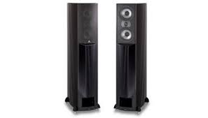

History
TechCon was founded in 2010 with the goal of bringing together the best minds in technology to foster innovation and collaboration. Over the years, it has grown into one of the most influential tech conferences worldwide.


TechCon was founded in 2010 with the goal of bringing together the best minds in technology to foster innovation and collaboration. Over the years, it has grown into one of the most influential tech conferences worldwide.
At TechCon 2024, our mission is to foster innovation by bringing together technology enthusiasts, professionals, and entrepreneurs to explore the latest advancements in the tech industry. We aim to create an inclusive platform for learning, collaboration, and inspiration, where people from all backgrounds can come together to share ideas and shape the future of technology.
We are committed to empowering the next generation of tech leaders by providing opportunities for mentorship and networking. Our goal is to inspire future innovators, offering them the tools, resources, and knowledge to succeed in a rapidly changing tech landscape.
In addition, we prioritize diversity and inclusion, ensuring that all voices are heard and respected in the technology space. By promoting equal opportunities for all, TechCon seeks to create a more inclusive and collaborative environment where innovation can thrive.
Finally, we believe in the power of technology to drive positive social impact. TechCon 2024 is dedicated to exploring how tech can be leveraged to address global challenges such as climate change, healthcare, and education, creating solutions that benefit communities around the world.
A well-crafted speaker bio is key to presenting and introducing yourself to the world. This is where you can give a glimpse into your story while also building your personal brand, attracting clients, and establishing your credibility as a professional speaker. It’s not just about your message but it tells why you and your story are so well-suited to provide the message. This article will guide you on how to write an effective speaker bio and will provide top-notch bios to inspire you in writing your own. Let’s get into it!
I shouldn’t have to write this. Obviously, your bio should give your name, your industry, and any titles you have. This clearly states who you are, what you do, and what you’re all about. The reader needs and wants this context to understand who you really are. Having this at the outset of your bio creates that strong first impression we talked about earlier.
